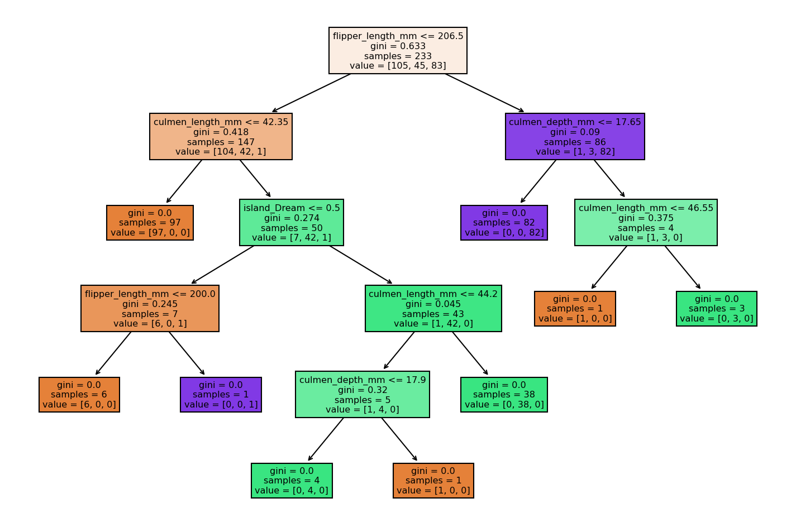

Decision trees are used to split data into categories and make decisions based on these categories.
An important term in decision trees isPurity, which measures the extent to which data points belong to a single,
specific class. Maximizing purity is a key objective,
as it ensures that the resulting nodes in the tree are as homogeneous as possible.
The main problem in decision tree is :
to decide which node should be the root node ,
And to try to satisfy purity on each split as much as possible.
The Scope Of Today's Topic
1) Gini impurity calculation
2) Choosing The root node in the case of :
- continiouse data points
- multicategorical data points
- multifeatured data sets
3) The importance of gini impurity threshold & specifying the depth of the tree .
1) Gini Impurity Calculation
It's a measurement of how well a feature separates classes.
The lower the value calculated from Gini impurity, the purer the node is.
Gini impurity is calculated as :
C(Q) = Σ Pₐ (1 − Pₐ)
where :
C -> Set of classes
Q -> The data set
c -> A specific class
Pc -> Probability of class c
Pc is :
Pc = 1/NQ Σ (y_class = c)
Where :
NQ -> number of data points
Σ(y_class = c) ->Summation of the number of data points belong to class C
2) Choosing The Root Node
when a feature is selected to be the root node it will behave as decision criterion .
splits are determined by this criteria.
splits create subsets ,the more the values on a subset belong to a single specific class the purer the node is.
We choose the root node with lowest gini impurity , on each split we treat the child node as a root node to decide which feature should the next node.
So, if we finally decided which feature should be a root node,
the data points might be :
-continous data points
-multicategorical data points
-multifeature data set
how we determine the best critria to split the data by ?
Continous Data Points
1- order the data points in ascending order.
2-take the midpoints to determine potential split .
3- we calculate gini impurity for each split,and we take the split with minimum gini impurity.
See the following table :
| X | Class |
|---|---|
| 1.2 | A |
| 2.3 | A |
| 3.1 | B |
| 4.5 | B |
| 5.7 | A |
1-Order The data points in ascending order :
1.2 , 2.3 , 3.1 , 4.5 , 5.7
2-Calculate possible split points , Split points are midpoints between consecutive values:
(1.2+2.3)/2=1.75
(2.3+3.1)/2=2.7
(3.1+4.5)/2=3.8
(4.5+5.7)/2=5.1
3- Calculating Gini impurity for each split , the optimal split is with minimum impurity :
Example for split at 𝑋=2.7:
Left partition (𝑋≤2.7): 1.2,2.3 → Classes 𝐴,𝐴
Gini impurity = 0
* Repeat for other split points and choose the one with the lowest impurity.
Multicategorical Data Points
Calculate gini impurity for all possible combination and ways to split the data .
see table :
| Color | Class |
|---|---|
| Red | A |
| Blue | A |
| Red | B |
| Green | B |
| Blue | A |
The splits can be : Red,Green,Blue,Red-green,Red-Blue,Green-blue
Calculate the gini impurity for each split .
Multi-Featured Data Set
As we mentioned before , all features are examined in the same way as we exmaine a data set with a single feature .
The one with a split that achieve minimum gini impurity will be the root node.
The root node acts as decision criteria :
in scikit learn nodes on left satisfy the condition of the previouse node
(feature <= threshold)
while node on right does'nt (feature > threshold).
based on that many data points of diffrent features will be splitted on right and left node.
See Figure :

Figure Explanition :
The Data set contains 6 features :
* culmen_length_mm: culmen length (mm)
* culmen_depth_mm: culmen depth (mm)
* flipper_length_mm: flipper length (mm)
* body_mass_g: body mass (g)
* island: island name (Dream, Torgersen, or Biscoe) in the Palmer Archipelago (Antarctica)
* sex: penguin sex
these features helps us to classify penguins are from what species (That's our target variable ).
we have 3 penguin species :
* Chinstrap
* Adélie
* Gentoo
Samples -> Number of Data Points Entering A node , The whole data set points enetrs the root node .
Values -> Data Points crossbonding To each species , respectivley .
3) Specifying A Threshold
And Depth Of A Tree
We can add gini impurity threshold as it contributes in both :
1- prunning as it make the tree smaller .
2- more biased model,overcome the overfitted model problem.
we can also determine the maximum depth of our tree by using
CV (cross validation).
CV -> helps tune maximum depth.
Gini Impurity -> evaluates splits to decide if they
improve purity—but within the constraints set by hyperparameters like maximum depth.